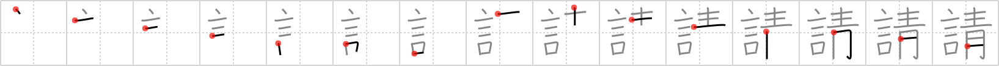

請
← →
solicit

Reading:
On-Yomi: セイ、シン、ショウ — Kun-Yomi: こ.う、う.ける
Heisig story:
Words . . . blue.
Koohii stories:
1) [Stormchild] 22-2-2007(193): That door-to-door salesman can stand outside ringing my doorbell until he's blue in the face. There's a big sign on my front door, and the words clearly say "No Soliciting".
2) [CountPacula] 18-7-2008(62): You can talk until you're blue in the face, but if you're trying to solicit me, you're just wasting your time…
3) [thegeezer3] 14-1-2008(46): Going through smurf blue light district - heres a smurfette saying all sorts of dirty words trying to solicit herself.
4) [Raichu] 15-11-2006(15): When you're blue, you need to solicit words to help you.
5) [cerulean] 19-4-2009(12): The Blue Man Group need no Words to Solicit themselves. They naturally draw a crowd without ever speaking a word.